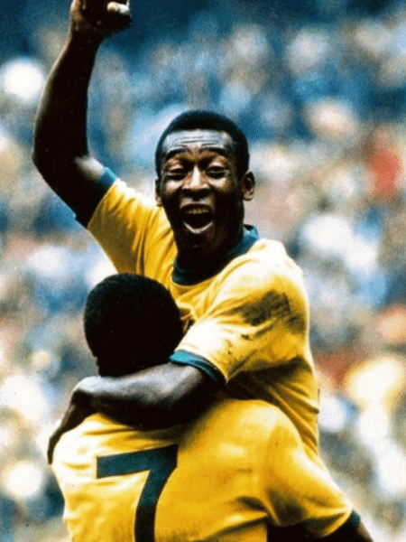
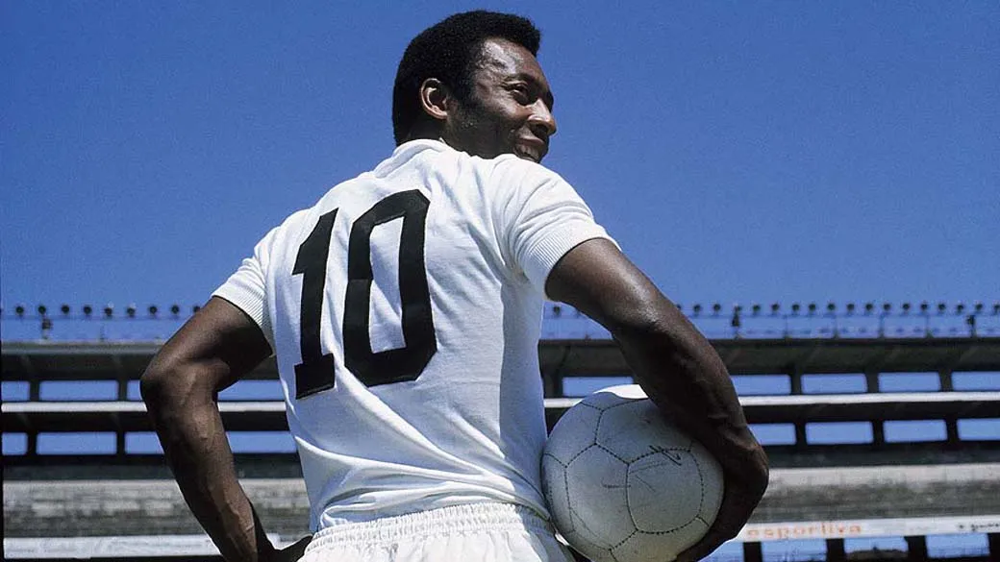
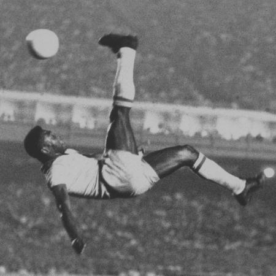
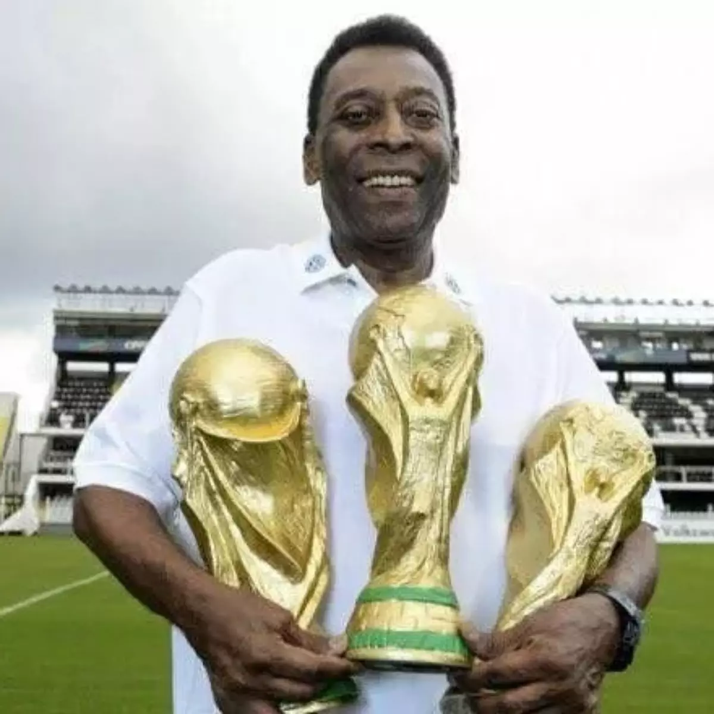

Edson Arantes do Nascimento (Três Corações, 23 de outubro de 1940 – São Paulo, 29 de dezembro de 2022), mais conhecido como Pelé, foi um futebolista brasileiro que atuou como atacante. Descrito como o "Rei do Futebol", é amplamente considerado como o maior atleta de todos os tempos. Em 2000, foi eleito Jogador do Século pela Federação Internacional de História e Estatísticas do Futebol (IFFHS) e foi um dos dois vencedores conjuntos do prêmio Melhor Jogador do Século da FIFA. Nesse mesmo ano, Pelé foi eleito Atleta do Século pelo Comitê Olímpico Internacional. De acordo com a IFFHS, é o segundo maior goleador da história do futebol em jogos oficiais, tendo marcado 765 gols em 812 partidas. No total foram 1283 gols em 1363 jogos (incluindo amistosos não-oficiais), um recorde mundial do Guinness. Durante sua carreira, chegou a ser durante um período o atleta mais bem pago do mundo.
About



